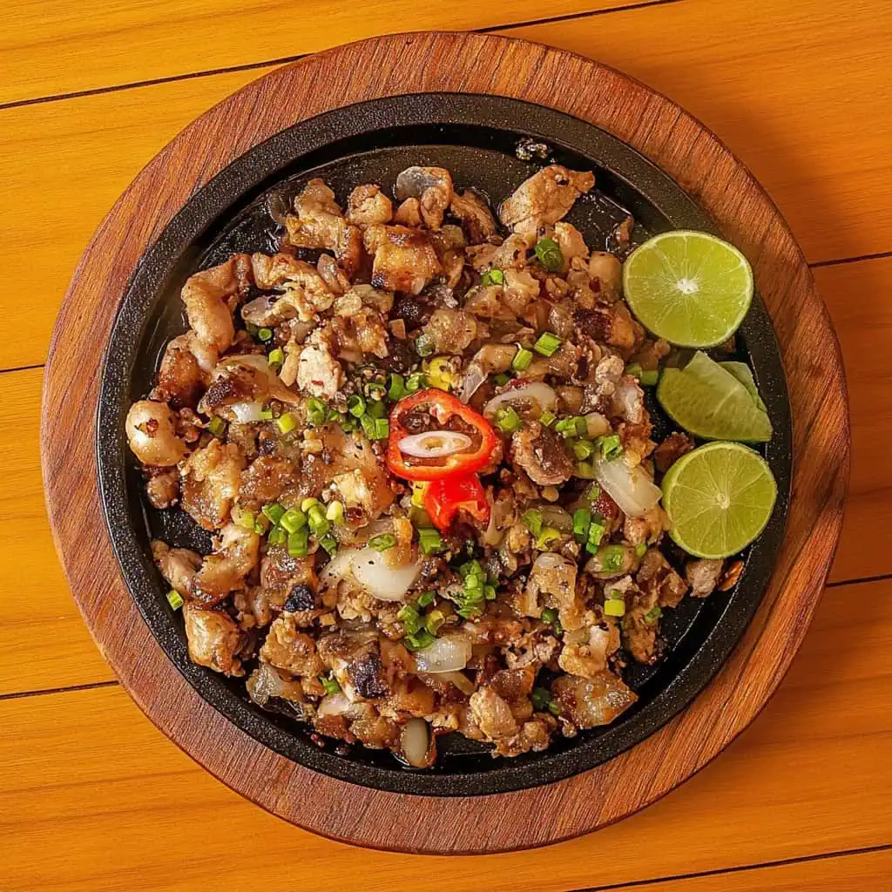

One of the most delicately catered and popular dish in the Philippines—Chicken Sisig. This is perfect for daily consumption and is always present in Filipino parties. One plate of Chicken Sisig can feed upto eight people. This perfectly panered with rice and a refresher soda.
Chicken Sisig
